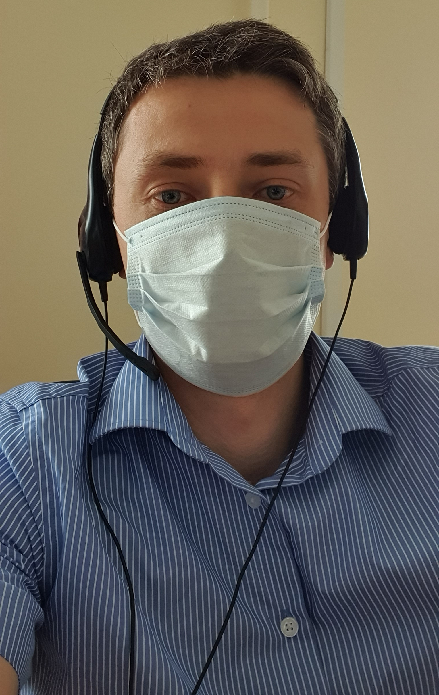

Александр Бурцев
Обо мне
Родился в Сибири, живу в Самаре. Женат, есть дочь.
Образование
Закончил самарский государственный университет путей сообщения по специальности организация перевозок и управление. Есть дополнительное образование по анлгийскому языку (хотя уже сильно утратит навыки) и по экономике на железнодорожном предприятии.
Опыт работы
Работаю в компании Softline более 14 лет. В настоящий момент занимаю позицию руководителя отдела по работе с ключевыми клиентами в Самаре.
Хобби
Люблю компьютерные технологии. Играю в футбол, волейбол.
Как я становился разработчиком но не стал
- 2007-2009 - увлекался Delphi, C#, поделки под Windows Mobile.
- 2013-2020 - соприкасался периодически с HTML, CSS, PHP, MySQL, но без какой-то системности и серьезного изучения.
- 2010-2022 - за данный период в целом по части разработки деградировал :)
- Октбярь 2022 - поступил на курсы Frontend-разработки в Skillfactory.